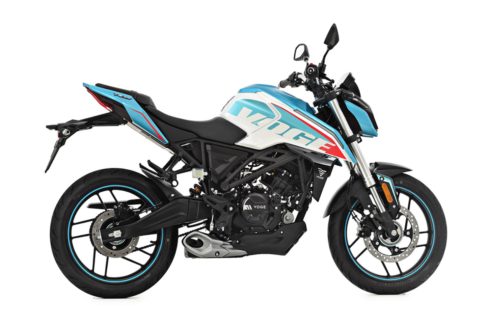
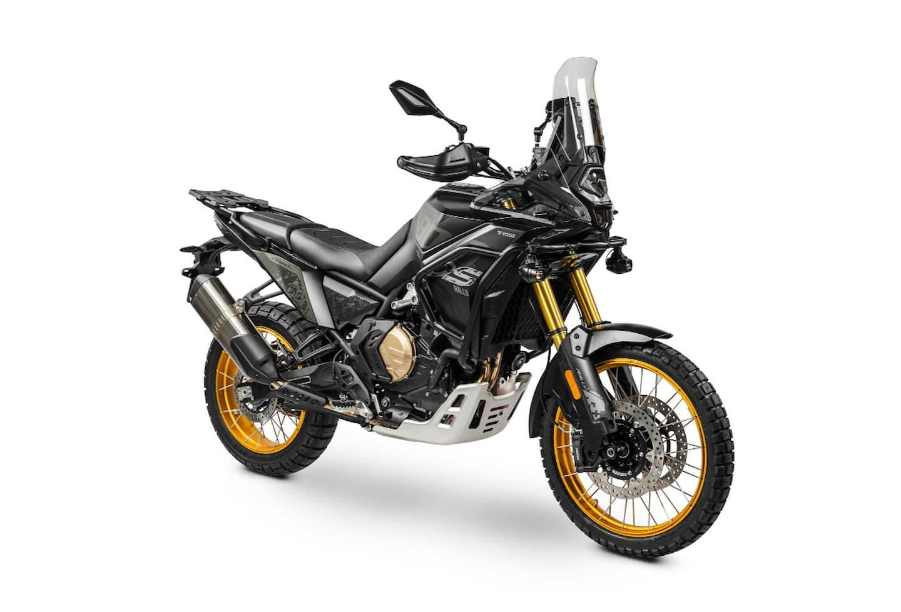
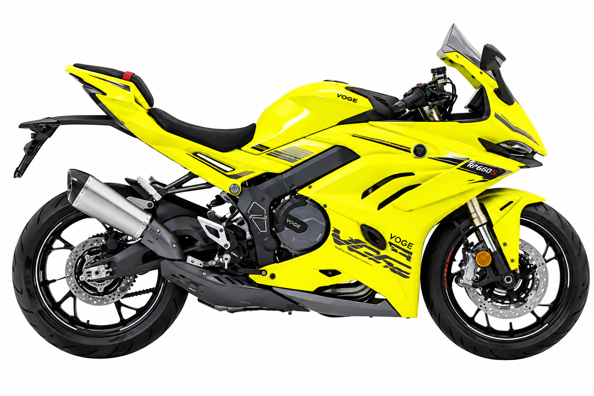
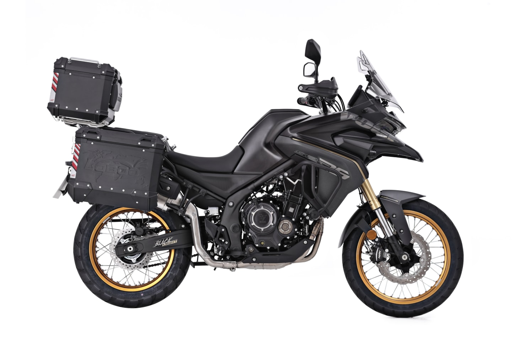

VOGE
VOGE je prémiová motocyklová značka patriaca pod čínsku priemyselnú spoločnosť LONCIN, založenú v roku 1993. Značka VOGE vznikla v roku 2018 s cieľom ponúknuť moderné motocykle s kvalitným spracovaním, pokročilými technológiami a atraktívnym pomerom ceny a výbavy.
Za značkou stojí výrobná fabrika LONCIN s dlhoročnými skúsenosťami a spoluprácou s BMW Motorrad.
Čím je značka známa?
- Silné výrobné a technologické zázemie.
- Spolupráca s renomovanými výrobcami.
- Moderné cestovné, adventure, športové a mestské motocykle.
- Atraktívny pomer ceny, výbavy a výkonu.

Voge 125RS – cena: od 3 349€
Športovo ladený motocykel s moderným dizajnom, ideálny pre začínajúcich jazdcov aj každodenné jazdenie. Vďaka nízkej spotrebe a jednoduchému ovládaniu je skvelou voľbou do mesta aj na kratšie výlety.
- Objem motora: 124,8 cm³
- Výkon: 11 kW
- Vodičský preukaz: A1
- Spotreba: 2,6 l/100 km

Voge 800 Rally – cena: od 9 249€
Dobrodružné cestovné enduro pripravené na asfalt aj náročnejší terén. Ponúka výkonný dvojvalcový motor, kvalitný podvozok KYB a bohatú výbavu pre dlhé cestovanie.
- Objem motora: 798 cm³
- Výkon: 70 kW
- Vodičský preukaz: A
- Spotreba: 5,2 l/100 km

Voge RR660S – cena: na vyžiadanie
Športový motocykel so štvorvalcovým motorom, agresívnym dizajnom a pretekárskym charakterom. Ponúka vysoký výkon, športový podvozok a prémiové brzdové komponenty Brembo.
- Objem motora: 662,8 cm³
- Výkon: 74 kW
- Vodičský preukaz: A
- Spotreba: doplniť

Voge 525 DSX Touring – cena: od 6 590€
Všestranné cestovné enduro vhodné na každodenné jazdenie aj dlhšie dobrodružné výlety. Ponúka pohodlnú jazdeckú pozíciu, úsporný dvojvalcový motor a bohatú výbavu vrátane možnosti cestovných kufrov.
- Objem motora: 494 cm³
- Výkon: 35 kW
- Vodičský preukaz: A2
- Spotreba: 3,7 l/100 km